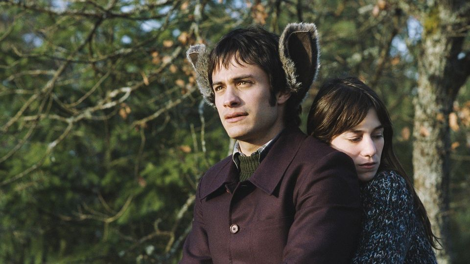

Legutóbb ezt láttam
Az angol címe The science of sleep egy 2006-os francia film,
Michel Gondry rendezte. Egy fiatal, félénk férfi új helyre
költözik, munkahelyi és párkapcsolati életét nehezíti, hogy álmai
néha összekeverednek a valósággal.
IMBD leírás
Könnyen emészthető, aranyos
A fantasztikus Róka úr egy animációs rajzfilm Wes Anderson
rendezésében. Mr. Fox már családapa, de nehezen hagyja hátra
kalandvágyó életét, és egy utolsó nagy csirkelopásra készül.
IMBD leírás
Nagyon súlyos
Biutiful c. film. Iñárritu rendezte és Javier Bardem játszik
benne. Az alsóbb rétegből származó elvált férfi egyedül neveli 5-6
éves kislányát, magát különböző simlis üzletekből tartja fenn.
Miután megtudja, hogy pár hónapja van hátra az életből, megpróbál
minél több pénzt szerezni, amit kislányára hagyhat. Miközben egyre
romlik az állapota, válogatott módokon fordul ellene a szerencse.
IMBD leírás